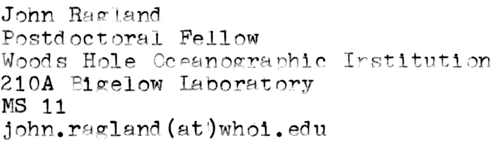
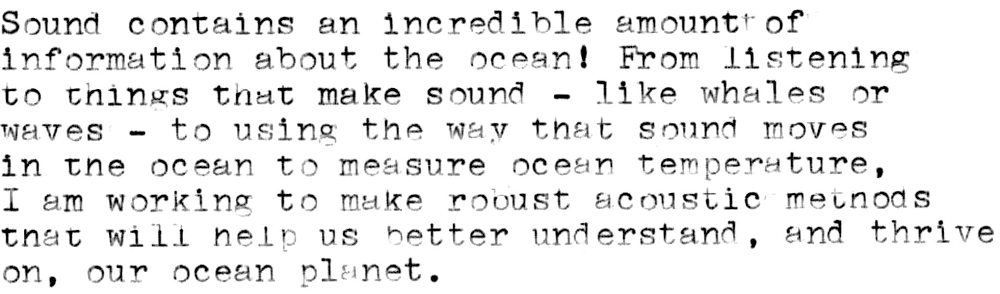

Hi! I’m a postdoctoral fellow at Woods Hole Oceanographic
Institution.
I’m working to develop tools to observe the ocean with
sound.
Overview of my research

Sound contains an incredible amount of information about the ocean! From listening to things that make sound — like whales or waves — to using the way that sound moves in the ocean to measure ocean temperature, I am working to make robust acoustic methods that will help us better understand, and thrive on, our ocean planet.
My research lies at the intersection of oceanography, acoustic propagation physics, and statistical inference methods like AI and Bayesian inference.
What’s next?
The ocean creates a natural acoustic wave-guide that can funnel sound for thousands of kilometers. As sound propagates through this wave-guide, it accumulates integrated information about the environment, but often times it is quite difficult to accurately, reliably, and quickly extract this information in a way that is useful for oceanographic observation. I’m currently working on two different threads of acoustic remote sensing.
The first area that I am working on is exploring new physical processes that acoustic remote sensing is capable of measuring. As sound propagates through the ocean, small-scale sound speed structure — especially the structure created by the internal wave continuum — creates stochastic fluctuations in acoustic intensity, phase, and coherence. Naturally, these acoustic observables contain information about the internal wave field and other small-scale structure (like spice). Using a combination of theory1, high accuracy numerical modeling of acoustic propagation2, and statistical inference methods, I am working to develop these methods and help us better understand and observe small-scale features in the ocean, which are particularly difficult to model and observe.
The second area that I am working on is making the classical methods of ocean acoustic tomography3 more robust and actually scalable so that they can reliably become a premier part of the global ocean observing system (GOOS). Traditional ocean acoustic tomography has had many successes over the past several decades. As an aside, I have collected my own personal thoughts about the history of ocean acoustic tomography which can be read here TODO With it’s many successes, there are still a few aspects of this technology which have made it difficult to scale and be a primary pillar of GOOS. I think that these bottlenecks are able to be adequately addressed with the combination of hardware acceleration of traditional computational acoustic methods, Bayesian statistical methods, and AI (which can help make Bayesian methods for highly expensive forward model evaluations tractable). I’m working to develop and integrate these methods into the ocean acoustic tomography work flow, which could enable tractable inversion of complex environments and unlock vastly simpler experimental infrastructure.